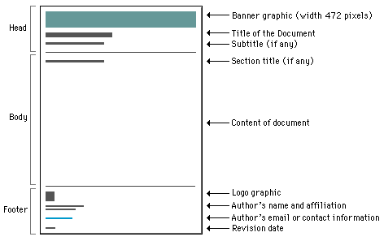

HTMLgen defines a class hierarchy supporting
several types of documents. A BasicDocument class provides a base
class which all the other classes inherit from. A SimpleDocument
can be used for most general purpose HTML files (it replaces what
used to be known as MinimalDocument). A SeriesDocument supports a
standardized page layout and navigation features. This was
formally known as the Document class. FramesetDocument is, as
before, used as a container for Frames and sub-documents. Separate
from this inheritance tree is a new TemplateDocument class.

The BasicDocument primarily provides the common HTML document features for the other classes, although it is not abstract and can be used directly. It supports attributes such as title and colors but does not support CSS. Likewise it does NOT support the use of a resource file to specify attributes. The non-keyword arguments are assumed to be objects to place in the document as it's initial contents.
The SimpleDocument class is used when you don't want or need the header and footer document structure of the SeriesDocument class, but still want the other features. It supports the resource file feature for things like specifying backgrounds, etc., and is particularly useful for CGI scripts and documents where the content is fully customized. This is the replacement name for the older MinimalDocument class from HTMLgen 1.2.
The SeriesDocument class supports a style of web page structure described in Patrick Lynch's excellent Web Page Style Manual at the Yale Center for Advanced Instructional Media. The specifics of this document style can be altered to taste by the use of parameters set in a resource file. Any class attribute can be set in the resource file and applied across many generated web pages. This way a series of pages can be generated with a consistent look without opening up the module and subclassing with Python.

The SeriesDocument framework also provides a mechanism for inserting navigation buttons in each document. It's important to provide navigation links in each web page as people tend to book-mark pages they like or have come from a search engine. We don't want to provide a page that they can't climb out of. There are four slots for navigation buttons; previous page, next page, top of manual, and home page. If a URL isn't provided then that slot is made transparent with another gif file called "blank" which is the same width as a navigation button it replaces.
The typical use is to instantiate a SeriesDocument object using a resource file and then taking Python objects, (strings, list, etc.) and sending them to classes appropriate for their mark-up. These mark-up objects are then appended into the document object until you are finished with the page. Then simply use the write method on the document object to send the generated HTML to a file. See the HTMLtest module for examples.
The nominal argument to the SeriesDocument class is a filename. This resource file contains simple Python assignments for attributes which configure the class instance. All the following attributes can be set this way:
Of the above, the most likely to be placed into a resource file will be the logo, author, email, the colors and graphics buttons. The resource file is execfile'd so it should be a trusted file. See the .rc files in the distribution directory for examples.
FramesetDocument inherits from BasicDocument and is used as a
container for Frameset objects only. The FramesetDocument is an
even more stripped down class used for containing Framesets
only. In this case there is no BODY element at all.  The
arguments given to the constructor are Framesets, not a resource
file.
The
arguments given to the constructor are Framesets, not a resource
file.
The new TemplateDocument class supports the use of an initial HTML file as a template into which substitutions are made at run time. Symbols surrounded by curly braces {like_this} act as markers and are checked against a given mapping then substitutions are made for each value found. This class is used when you have an intricate HTML document which would be inconvenient to synthesize with HTMLgen classes from scratch. A WYSIWYG web page tool can then be used to write these template pages and just place the named symbols in the doc and just construct the substitution mapping at run time. This approach is fast and efficient but requires Python 1.5 or newer.

Copyright © 1996-7 Robin Friedrich
All Rights Reserved
Comments to author: friedrich@pythonpros.com
Generated: Thu Aug 5, 1999